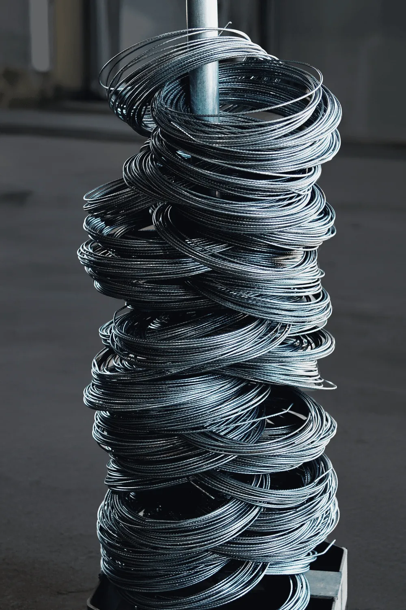
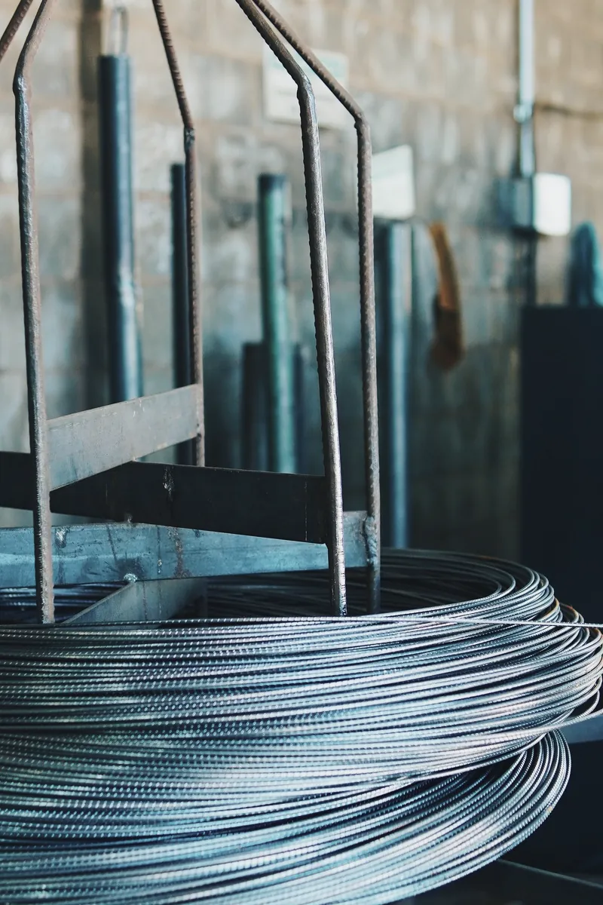
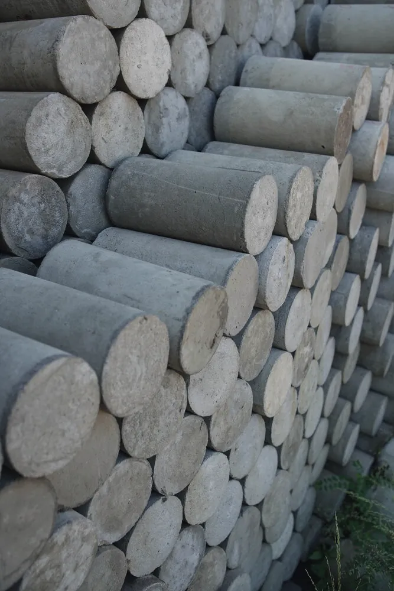

A força guardada dentro do concreto.
Na pista de protensão, os fios de aço são tracionados antes do concreto. Quando a peça ganha resistência, os fios são liberados e a força passa para a estaca. É ela que a protege no transporte, no içamento e no golpe do martelo.

Produção industrial, desempenho previsível.
Fabricada em ambiente controlado, a estaca chega à obra com resistência verificada, geometria exata e histórico rastreável.
Fôrmas metálicas
Moldes de alta precisão em ambiente controlado garantem a mesma seção do topo à ponta.
Dimensões sob projeto
Seções quadrada, circular e hexagonal em comprimentos de 6, 8 e 10 m.
Concreto protendido
Os fios tracionados dão resistência à flexão no transporte, no içamento e na cravação, e reduzem a porosidade.
Anéis de emenda
Emendas metálicas soldadas unem segmentos com continuidade estrutural em grandes profundidades.
Fios finos, tensão alta.
Cada seção leva seis fios de 4 a 6 mm (oito na quadrada), esticados ao longo de toda a pista como cordas de um instrumento. O concreto é lançado sobre eles, cura, e só então a tensão é liberada nas cabeceiras.
Ver o aço de cada seção
Catálogo técnico.
Escolha a geometria e a bitola para ver a seção em escala, as características geométricas, a capacidade de carga estrutural e baixar o ábaco de interação.
Qual seção atende a sua carga?
Informe a carga de compressão por estaca e veja quais seções atendem pelo limite estrutural da NBR 6118, e qual é a mais leve entre elas.
Compressão máxima pela NBR 6118
kN por estaca · toque numa seção para abrir a fichaFerramenta de referência. Os valores representam a capacidade estrutural da seção, conforme os ábacos IPR. A carga admissível final depende também da capacidade geotécnica, definida a partir do relatório de sondagem (SPT) e do projeto de fundações. Consulte a nossa engenharia.
